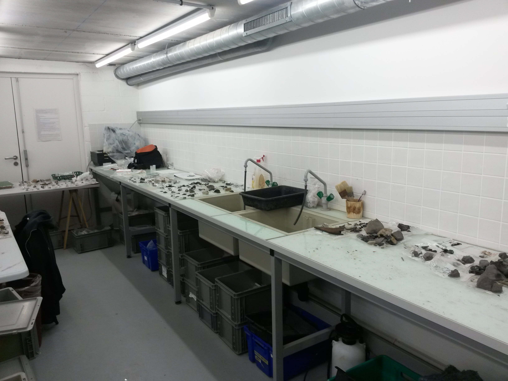

Salle of archaeological studies of the SRA Nord ( L. Bruge)
Welcome to the Historical Studies !
Here, you will find the list of french archaeological professionnals, with the main prehistorical site, among the thousand and thousand sites in France!
You will find also the list of the professionnels of the archaeology.
We provide you also, a short and not comprehensive bibliography of the main prehistorical search. The books are written on english and french.